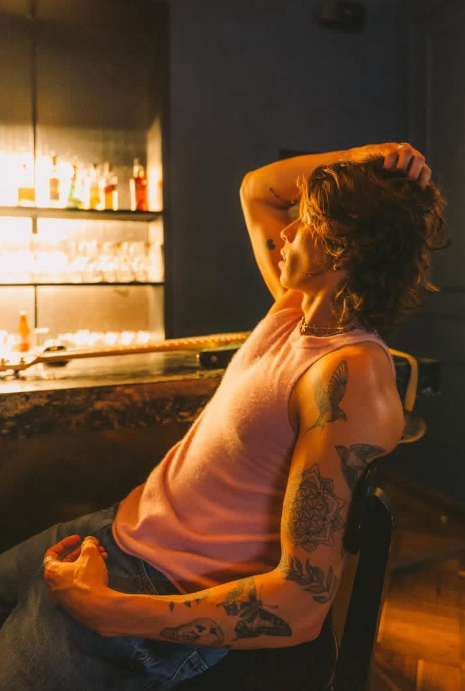

contexto
TIMØ: el nuevo pop colombiano
TIMØ es una banda colombiana de pop y rock latino en español originaria de Bogotá, Colombia, integrada por Felipe Galat, Andrés Vásquez y Alejandro Ochoa. La banda se caracteriza por componer y producir de manera su propia música, así como por su origen como un proyecto de amigos surgido en la universidad.
Alejandro
Nacido en Cartagena, 27 años, parte de la identidad creativa y musical de TIMØ.

Andrés
Rolo, con 26 años, su estilo conecta con la estética nostálgica y juvenil de la banda.
Felipe
Rolo, con 24 años, aporta la energía emocional y pop característica de TIMØ.